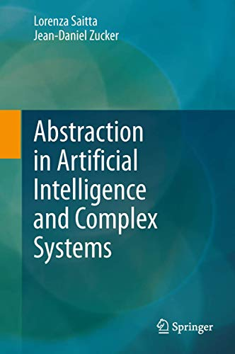
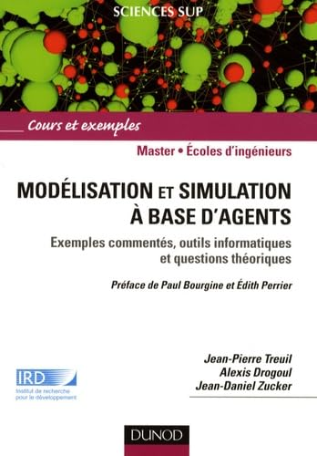

個人簡介
法國ISAE-SUPAERO工程師，索邦大學機器學習博士（1996年），現任法國發展研究院（IRD）特級研究主任（DRCE）。自2025年1月起擔任UMI UMMISCO副主任（2014–2024年任主任），同時於索邦大學及巴黎多芬大學（PSL）擔任計算機科學教授，並共同領導Integromics研究小組。
其研究聚焦於有監督與無監督機器學習在複雜系統建模及醫療決策中的應用，領域涵蓋宏基因組學、營養基因組學、流行病學及環境科學。
語言能力
年度引用數 （Google Scholar）
研 究
機器學習與抽象化
歸納學習、表示變換、多實例分類、可解釋評分系統、生物醫學自然語言處理（AliBERT）、可解釋深度學習。
多智能體與複雜系統
基於智能體的建模與模擬、GAMA平台、多尺度建模、人群疏散、環境決策支持、生態系統建模。
宏基因組學與腸道菌群
人類腸道微生物組、多組學整合、肥胖症、二型糖尿病、心代謝疾病、代謝手術、深度學習應用。
精準醫療
糖尿病緩解預測（Advanced-DiaRem評分）、患者分層、生物信息學、藥物警戒、心電圖深度學習。
學術成果
300+篇 · Scholar：25,229引用，h 57 · Scopus：15,129引用，h 44，177篇
載入中…
書 籍

人工智能中抽象化的統一形式理論：問題重構、表示變換、近似。凝聚兩位作者逾30年的研究成果。174次以上引用。

法語圈基於智能體建模的參考教材：詳解示例、計算工具與理論基礎。200次以上引用。
指導門生
在讀博士生（6位）
利用深度學習多模態方法，從工作情境分析預測肌肉骨骼障礙。
運用大語言模型（LLM）超越自動系統文獻綜述（ASLR）的局限。
深度學習表徵參與心代謝疾病惡化的細菌菌株。
JUNOM — 海鳥數字孿生：基於深度學習的氣候變化影響場景預測。
深度學習用於植物環境DNA序列分類。
可解釋深度學習用於多來源生物標誌物檢測與患者分層。
| 年份 | 姓名 | 論文主題與現職 |
|---|---|---|
| 1997–2001 | Sébastien Mustière | Machine Learning for Cartographic Generalization研究員，LaSTIG，IGN & ENSG（巴黎） |
| 1998–2001 | Yann Chevaleyre | Multiple-instance ML for Inductive Logic Programming正教授，LAMSADE，巴黎多芬大學-PSL |
| 1998–2002 | Laurent Breton | Computer Aided Discovery in Granular Physics工業界項目負責人 |
| 1998–2002 | Mélanie Courtine | Abstraction for Unsupervised ML in functional genomics副教授，巴黎第十三大學 |
| 1998–2002 | Nicolas Bredeche | Multiple-Representation Learning for robot perception正教授，ISIR，索邦大學 |
| 2001–2005 | David Sheeren | Supervised Learning for Geographic Databases正教授，DYNAFOR，INP-AgroToulouse/ENSAT |
| 2003–2006 | Blaise Hanczar | Feature selection for ML from DNA Chips正教授，IBISC，埃夫里大學（巴黎-薩克雷） |
| 2004–2008 | Corneliu Henegar | Unsupervised Learning for Regulation Networks副教授，UPEC & Scripps Research，拉霍亞，加州 |
| 2004–2009 | Aydano Machado | Adaptative Transfer in Reinforcement Learning正教授，UFAL計算機學院，巴西 |
| 2005–2009 | Ramzi Temani | Combining Data Sources for ML in obesity研究科學家，西德拉醫學中心 |
| 2004–2009 | Ariel Bennis | Computer Aided Scientific Discovery from Post-Genomic Data專利專家，以色列 |
| 2007–2011 | Edi Prifti | Integrative Bioinformatics for Complex Diseases研究員，IRD UMMISCO / INSERM Nutriomics / 索邦大學 |
| 2007–2011 | Sajjad Ahmed Nadeem | Classification with reject-option for decision support副教授，巴基斯坦 |
| 2006–2011 | Tran Nguyen Minh Thu | Association Rules Abstraction for Recommendation Systems博士後 & 講師，芹苴大學，越南 |
| 2010–2013 | Meriem Abdennour | ML for diagnosis of adipose tissue pathologies in obesity研究工程師 |
| 2010–2014 | Thi Ngoc Anh | Dynamic Multilevel Modeling for rescue simulation講師，USTH，河內 |
| 2011–2015 | David Dernoncourt | Stability of Feature Selection in ML for obesity— |
| 2010–2015 | Inès Hassoumi | Coupling Multi-agent Models for urban expansion— |
| 2011–2016 | Ho The Nhan | Parallelized Learning for multi-agent simulations— |
| 2013–2016 | Le Van Minh | ML for Tsunami evacuation sign placement— |
| 2015–2018 | Nguyen Thanh Hai | Deep learning of Metagenomics Data研究員，越南芹苴大學 |
| 2015–2020 | Dao Minh Quang | Integrative BigData mining: metagenomics and metabolomics— |
| 2017–2021 | Maxence Queyrel | Sub-group Discovery and Deep Learning for Omics Data機器學習工程師，Valeo（巴黎） |
| 2020–2023 | Ahmad Fall | Explainability in Deep Learning for Cardiometabolic Diseases研究工程師，IRD |
| 2020–2024 | Théophile Bayet | Inclusivity of deep learning vision systems for the Global South博士後研究員，索邦大學 / LIP6 |
| 2021–2024 | Alex Lence | Generative models for synthetic ECGs — Torsades de Pointes risk研究工程師，IRD/UMMISCO |
| 2021–2025 | Gaspar Roy | End-to-end Transformer for disease prediction from metagenomics博士後研究員，IRD/UMMISCO |
研究項目
通過宏基因組學和多組學數據整合實現精準醫療的端到端深度學習。利用2,000名深度表型患者的獨特隊列進行研究。
宏基因組學與心代謝疾病系統醫學（HEALTH-F4-2012-305312）。6個國家14個合作夥伴。
歐盟資助：11,999,992歐元 · 總計：20,387,421歐元
通過模擬探索城市人口疏散意識。
212,000歐元（IRD）
結合機器學習方法與生物統計學，用於研究與肥胖症相關的遺傳多態性（與加州大學伯克利分校Sandrine Dudoit合作）。
先進軟件工程環境框架（n°1520）。8個歐洲國家40餘名參與者。
600萬歐洲貨幣單位（Écus）
榮譽獎項
集體獎項，源於Le Chatelier et al.，「人類腸道微生物組的豐富度與代謝指標相關」，Nature 500，2013年（5,000次以上引用）。
APHP醫院與IHU ICAN接口項目競賽獲獎者。
ObeLinks項目 — 結合機器學習方法和生物統計學研究肥胖症遺傳多態性（與加州大學伯克利分校Sandrine Dudoit合作）。
法國國家科學研究中心（CNRS）贊助。CD-ROM《利瑪竇 — 漢字》，與Joël Bellassen（巴黎第七大學）合作。
國際計算機教育大會，台北，中華民國台灣。「機器學習對漢字引導發現式教學環境的貢獻」。